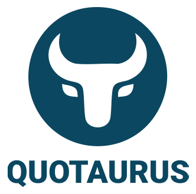

Contact support
Support is currently email-based and handled during UK business hours. For urgent production-impacting issues, put "Urgent" in the subject line and describe the business impact clearly.
Email support
Support
Get help with installation, configuration, quote workflow questions, bug reports, and data handling requests for the Jira Cloud app.
Support is currently email-based and handled during UK business hours. For urgent production-impacting issues, put "Urgent" in the subject line and describe the business impact clearly.
Email supportexample.atlassian.net.Quotaurus aims to respond to support messages within two UK business days. Complex issues may need follow-up information, screenshots, or reproduction steps before they can be resolved.
If you believe you have found a security issue, email support@quotaurus.com with a clear subject line and avoid sharing details publicly until the issue has been reviewed.
| Severity | Example | Target |
|---|---|---|
| Critical | App unavailable for all users. | Best-effort faster initial response during UK business hours. |
| High | Quotes cannot be generated or sent. | Same or next UK business day where possible. |
| Normal | Configuration, workflow, or usage question. | Within two UK business days. |
| Security | Potential vulnerability or data exposure. | Acknowledgement target: within two UK business days. |
These targets are support goals, not a formal SLA. Include severity, business impact, Atlassian site URL, and reproduction detail so the issue can be triaged quickly.